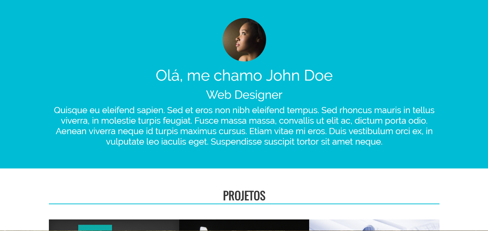

Na Internet você vai encontrar diversos sites de portfólio. Por possuir uma estrutura simples, é comum inicarmos os estudos com a criação de um portfólio mesmo que você ainda não tenha nenhum projeto realizado. Aos poucos vamos adicionando nosso progresso dentro do portfólio, novos conhecimentos e realizando alterações no seu HTML.
Dentro deste projeto há um arquivo chamado portfolio.html. Nele você encontrará o início de nosso projeto.
Neste projeto vamos aprender um pouco mais sobre as tags HTML e inicar os primeiros passos com CSS e utilização de recursos extenos.
Mesmo depois de concluir o seu primeiro projeto, é importante continuar praticando. Vamos realizar mais dois projetos depois do site portfólio para você ganhar seguraça antes de começarmos a utilizar os frameworks CSS.